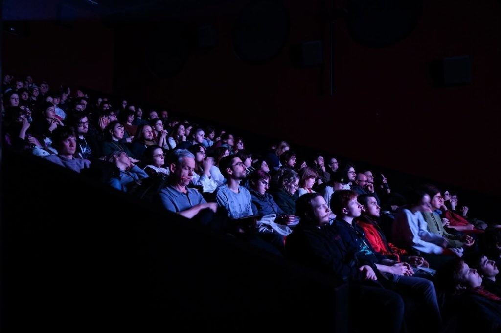

Festivals · Film
Animateka 2026
- Dates
- –
- Venue
- Kinodvor and Slovenska kinoteka, Ljubljana (VR@Animateka at Cukrarna from 27 Nov)
- Location
- Ljubljana, Slovenia
- Format
- In-person
- Category
- Film
- Industry
- Film
- Organiser
- Društvo za oživljanje zgodbe 2 Reels
- Official website
- https://www.animateka.si/
About
Dates are local civil dates in Slovenia (Central European Time, UTC+1 / UTC+2 in summer).
Topics: animation, animated film, film festival.
No organiser attendance figure found on the official pages fetched 24 Nov 2026. Ranked by our estimated size tier 'small' (under 10,000 attendees/visits), a judgement from format, venue and scale, not an official number.